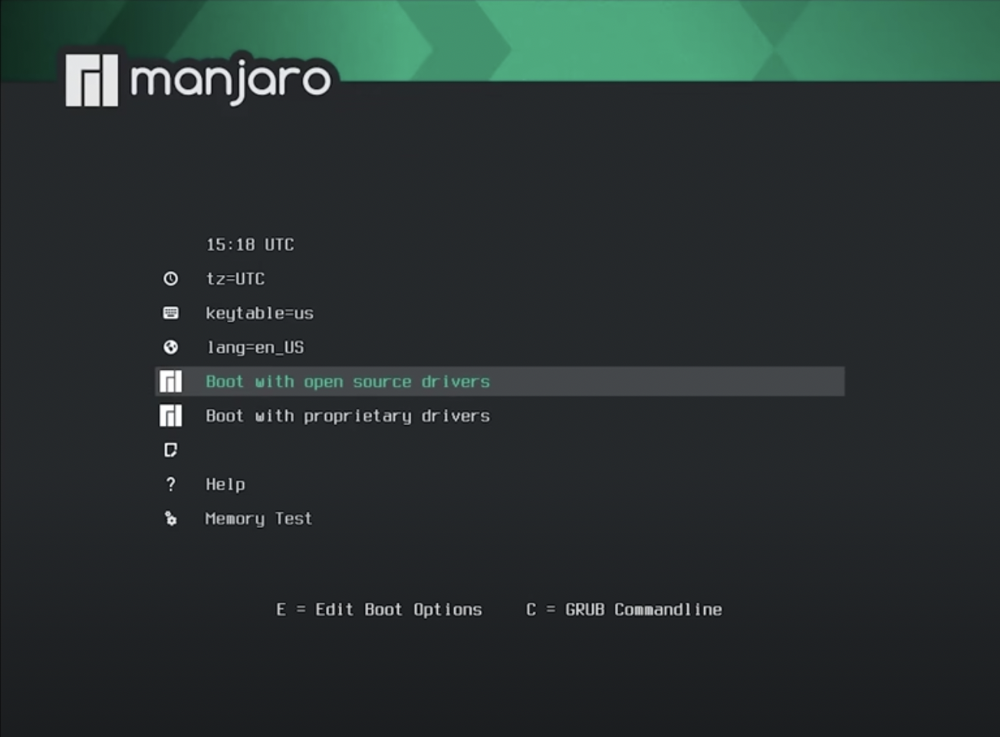

记录装 Ubuntu 双系统的过程
机型为联想 Yoga14s amd 版, 大体按照 https://www.cnblogs.com/masbay/p/10745170.html 这篇文章进行操作(情况为 UEFI 加单硬盘), 这里主要记录不同之处.
首先是 BIOS, 先按 F2, 到 Securty 中 disable Secure Boot, 然后保存并重启. 按 F12, 选择 USB HDD 开始安装系统.
在手动分区时, 分区类型全部选择逻辑分区即可.
第一次分区完准备安装以后卡死过一次, 重启然后重复操作发现没有影响, 装机之前也没有备份, 感觉装双系统装崩的可能性还是比较小的.
———————————————————————2022.04.09 更新———————————————————————
有一堆作业实验没做, 但是不想学习, 于是又在老机子上装了第三个操作系统 Manjaro, 这时对装系统还是比较熟练的了, 下面记录下大体步骤.
将下载后的
iso文件刻入 U 盘 (Mac 下可以用 balenaEtcher, Windows 可以用 软碟通 或者 rufus).利用 Windows 的磁盘管理工具分出一块磁盘空间.
Disable secure boot, 开机时按 F12 选择 USB HDD 安装系统, 这时界面如下图

在该界面下可以选择时区 (tz, timezone), 语言 (lang), 进去再选也行, 之后选择开源驱动, 按 Enter, 就安装完了.
分区配置. 安装完以后将来到 Manjaro 的欢迎页, 选择最下面的”启动安装程序” (如果没改语言可能是英语的 Installation 之类的), 前面欢迎和位置页可以选语言. 分区时可以只分
/或者细分/home,/opt以及交换分区等. 这里我只分了/home和/. 最重要的是要配置引导, 选中第一个分区 (通常是几百兆, 文件系统为 FAT32 的引导分区), 选择编辑, 挂载点选/boot/efi, 就完成了分区配置. 之后重启岂可.
安装完成后的配置:
换源. 首先打开终端 (Manjaro 的终端真是吊打 Ubuntu, 默认 shell 就是 zsh, 而且带 syntax highlighting 和 autosuggestion), 输入
sudo pacman-mirrors -i -c China -m rank就会弹出一个按延时排序的镜像列表供选择, 果断选择妮可镜像(事实上 nju 的好像比妮可的快一点).pacman 是 Manjaro 下的包管理器, 换源之后输入sudo pacman -Syy来同步软件包数据库 (类似apt update).sudo pacman -Syu可以进行所有软件的 upgrade. 由于 Manjaro 是滚动更新的, 经常 upgrade 可以保持系统始终是最新版. (最好每次开机都进行sudo pacman -Syu).中文输入法. 首先增加中文社区的源，在
/etc/pacman.conf中添加archlinuxcn源：[archlinuxcn] SigLevel = Optional TrustedOnly Server = https://mirrors.ustc.edu.cn/archlinuxcn/$arch之后同样是
sudo pacman -Syy, 然后sudo pacman -Sy archlinuxcn-keyring以导入GPG key，否则的话会报签名验证失败无法安装的错. 之后输入如下命令:$ sudo pacman -S fcitx-im fcitx-configtool fcitx-sogoupinyin然后添加文件
~/.xprofile:export GTK_MODULE=fcitx export QT_IM_MODULE=fcitx export XMODIFIERS="@im=fcitx"
完成后重启即可.
其他包管理器. pacman 不能直接安装 AUR (Arch User Repository), 因此需要 AUR 助手, 目前常用的有 yay 和 paru (Rust 编写). 都可以用 pacman 安装.
梯子. 直接
yay -S clash即可.下面重点记录一下美化的过程.
作为一个不资深果粉, 肯定是要把主题刷成 MacOS Monterey 的. KDE 版本的直接在系统设置->外观里就可以进行美化, 但是从系统的主题商店即使挂了梯子也下载不到主题, 这时只能去 GitHub 上下载.
首先访问主题网站: https://www.pling.com/, 搜 Monterey KDE, 得到 https://www.pling.com/p/1567584/, 循着 source 来到 GitHub 页面, 按照 README 的提示走就行. 安装完成后就可以去设置里更换. 值得注意的是按钮的位置如果要调到左边, 需要在窗口装饰元素->标题栏按钮里面修改.
主题对了, 还有顶上的菜单栏和底下的 Docker 要搞.
先处理 Docker. 首先装上
latte-dock:sudo pacman -S latte-dock. 之后输入latte-dock以启用. 然后就可以把原本底下的 Panel 去掉. 之后搜索 “macos layout for latte dock”, 找到 https://store.kde.org/p/1399346/, 点击右边的 Download, 解压后在latte-dock的配置中引入即可.然后是菜单栏: 在桌面进行添加面板->应用程序菜单栏, 上方出现一个菜单栏. 之后右键该菜单栏添加组件, 内容见仁见智, 这里我从左到右的排列是: 应用程序启动器 全局菜单 总 CPU 使用情况 显示桌面 系统托盘 电池和亮度 数字时钟. 最后放上美化的最终成果:

Vivado 公交车, 之前为了做数电实验专门给 Ubuntu 分了 60 G 的磁盘空间装 Vivado, 并把这个分区挂载到了 Ubuntu 的
/mnt, 现在想让它发挥余热, 也挂到 Manjaro 上用. 打开 GParted, 发现这块分区已经自动被挂载了, 只是没有挂载点, 这时只要修改/etc/fstab就可以了:$ sudo blkid # 找到磁盘的 UUID $ sudo nvim /etc/fstab # 添加到文件里启动 Vivado, 这垃圾软件果然不让我失望, 还缺个依赖 (libtinfo.so.5), Ubuntu 也缺, 做法是
$ sudo apt install libtinfo-dev $ sudo ln -s /lib/x86_64-linux-gnu/libtinfo.so.6 /lib/x86_64-linux-gnu/libtinfo.so.5Manjaro 没有
libtinfo-dev这个库, 万能的 arch 社区表示 Manjaro 只有libtinfo.so.6,libtinfo.so.5是ncurses5-compat-libs提供的.运行后发现 Vivado 连 scale 都不懂得跟随系统, 需要通过 Tools->Settings->Display->Scaling 修改.
一些好用的软件: 待更.
一些踩坑和未做:
首先是 wine, 由于 arch 的软件包过于先进, 导致 wine 只有 wine5 和 wine6 可以用, 而 wine6 虽然包名里带个 stable, 但是很不稳定. TIM 和微信都依赖 wine6, 但是我的 TIM 有很多字体显示不出来, 参考了 arch wiki 和 知乎 修改了注册表依然不奏效, 暂且作罢. 不过微信暂时能用. QQ 依赖 wine5, 可以解决字体无法显示问题, 但是每次关闭后重开都要重装 QQ, 不知为何. 按 arch wiki 的说法, 这可能跟 KDE 也有关系.
然后是驱动, 闲着蛋疼在设置->硬件设定里装了 video-vesa, 导致开机无法进入 KDE 桌面 (提一嘴, KDE 真不如 GNOME 好用), 搜了一圈, 有说是 NVIDIA 显卡的问题 (但我的机子是 AMD 核显, 不存在这个问题); 也有说是 Qt 的锅, 因为输入
kstart5 plasmashell手动进入 KDE 桌面会报如下错误:qt.qpa.xcb: couldnot connect to display qt.qpa.plugins: couldn’t load the Qt platform plugin "xcb" in "" even though it was found.同时建议重装 xxx 来修复此问题, 全部重装了一遍发现没用. 最后的解决方案是, 先去 tty,
mhwd -l看看都装了什么驱动,sudo mhwd -r pci video-vesa删掉 video-vesa 即可.